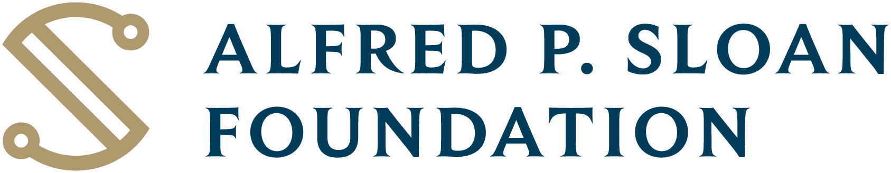
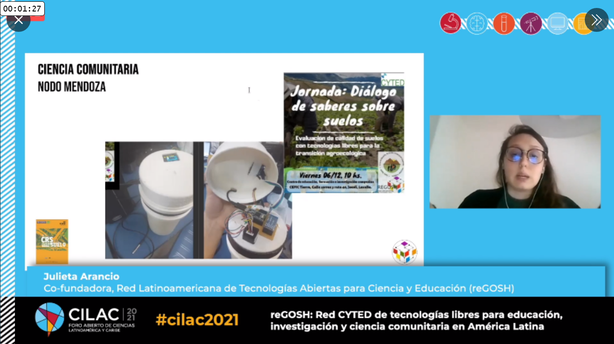

layout: true class: typo, typo-selection --- class: middle ## <span class="oc-bg-teal-2">Open Science Hardware:</span> <br> Transforming the politics <br>of knowledge production in academia? ##### <small><span class="code-highlight">Dr. Julieta Arancio<br>Center for Science, Technology and Society<br>Drexel University<span> .abs-layout.left-55.top-90[ ] .abs-layout.left-70.top-90[  ] .abs-layout.left-90.top-90[ <img src="imgs/drexel.jpg" width="40%"> ] ??? Hi everyone, I’m Julieta Arancio. I’m happy to be here telling you about my postdoc work! Disclaimer: I’m not here to talk about physics, but I hope this is still interesting! --- ### About me .abs-layout.left-5.top-20[ ] .abs-layout.left-50.top-20[ ] .abs-layout.left-50.top-65[  ] .abs-layout.left-20.top-70[ <img src="imgs/ohmlogo.jpg" width="40%"> ] ??? I’ll introduce a little bit about myself, not because I like it, but because I think it’s necessary to better frame my role here at Bath. I’m a researcher from Buenos Aires, Argentina. Before coming here my whole education, undergrad and PhD, took place back home. I started studying env sciences and after working as a lab technician, and later on a consultant for companies for a couple of years, I got really bored. I decided to look back into academia, and applied to a job and got it, as a research assistant for a group of sociologists who needed someone who understood environmental science in their team. That project was about how open science could be useful for increasing transparency and trust in highly contested arenas, like environmental conflicts, when both parties think the other one is manipulating the data. I was familiar with free software because of personal involvement in local activism, but this project introduced me fully to open science and to the methods of social science. When that project funding ended, the only way to keep working as a researcher was to apply to a phd scholarship, so I did that. Until then, for me open science was the practice of sharing openly your research data and publications. But then, while I was writing my phd proposal, I came across open hardware. And it blew my mind. --- background-image:url(imgs/gosh2.jpg) .abs-layout.p-m.top-20.left-0.width-47.oc-bg-black.opacity-80.oc-teal-2[ <big><strong>Open hardware:</strong><br><br>Openly licensing / sharing design files so anyone can modify, study, share, commercialize them. </big><br> ] ??? I’m going to quickly make explicit what we mean when we talk about open hardware, so we are all on the same page. Open hardware is the practice of openly licensing the design files of material objects, so anyone can modify, study, share, commercialize them. The term also refers to the products of which the designs are made open. And it also refers to a movement of people making this possible worldwide. In science, open hardware refers to any instruments and materials we use to produce knowledge. Not only electronics, but mechanical instruments, simple objects like a tray for holding samples, or complex ones like enzymes. What is interesting from a sociological perspective, is that not only academics are producing open hardware for science. People are interacting with open hardware designs in community science, in art, in education. --- class: middle ## More <span class="oc-bg-violet-2">efficient</span> <br> <i class="ri-terminal-line"></i> economic savings <i class="ri-terminal-line"></i> time savings <i class="ri-terminal-line"></i> less bugs <i class="ri-terminal-line"></i> accelerates innovation <br><br> .right[ ## ...More <span class="oc-bg-teal-2">democratic?</span> ] ??? Advocates say that open hardware not only makes science more efficient, because it avoids reinventing the wheel, accelerates innovation, diminishes dependence on labs that may go out of business or generate delays in repair or customizing tools. Many of them also say open hardware democratizes science, because it gives people outside academia access to the tools they need to produce knowledge. This is the angle that is interesting for me as a social scientist. --- ## <span class="oc-bg-teal-2">PhD</span> #### Research questions 1. Is open hardware a feasible niche for change? 2. Which are the collaborative strategies used for developing open hardware? 3. Which capabilities do participants achieve in the process? #### Design Embedded, multiple case study #### Projects - Gorgas Tracker (Peru) - Vuela drones (Chile) - KossamTor (Cameroon) - Open Flexure (Tanzania) .abs-layout.left-55.top-50[ <img src="imgs/gorgas1.png" width="35%"> <img src="imgs/of2.jpeg" width="35%"> ] ??? So during my phd, my three research questions were: Is open hardware a feasible niche for change? Which are the collaborative strategies used for developing open hardware? Which capabilities do participants achieve in the process? The nature of the research question, aimed at understanding mechanisms, the scarce literature available and the recent nature of the phenomenon under study make this an exploratory study. Qualtative strategies are useful in this type of situation, as they allow us to explore, for example, how participants in the global movement and projects construct their practices and narratives, providing details about the context in which these discourses and activities emerge. During my phd, the research design chosen was a multiple embedded case study. Case studies allow in-depth exploration of programs, events, activities or processes through the collection of detailed information using a range of methods over a period of time. Case studies are convenient when there is an exploratory topic, process-oriented questions, no control over participants' behavior, and when you deal with contemporary rather than historical processes. My cases included: An open tracking system for monitoring human mobility and malaria expansion (Peru) Open drones for monitoring illegal mining sites (Chile) Open incubators for women of a rural community to produce local yoghurt (Cameroon) Open Flexure in Tanzania They are all in the global south, because there is little doc of open hw in the south and because democratization was identified as relevant in all cases. I observed them as part of the global open science hardware community, the umbrella network --- <br> <small>PhD</small><br> <big>**Results**</big> <br> #### - Open science hardware as a <span class="oc-bg-lime-1">collective:</span> History & characterisation as transformation niche #### - Mechanisms for <span class="oc-bg-lime-1">collaboration: </span> Peer to peer learning, hybrids academic/activist, building a common language, bridging science and design. #### - <span class="oc-bg-lime-1">Capabilities:</span> Exploration of capabilities for open hardware ??? As a result of the phd I published a paper that analyzed the narratives, strategies and spaces opened up by the open hardware movement in science, that allowed it to become a feasible niche for change. This means, how the movement articulates and communicates its vision, how it learns from its own collective action, and how it mobilizes resources from broad and deep networks to sustain its activity. I’m in a review and resubmit process of a paper on the mechanisms for embedding collaborative values in the design of science instruments. This explains who participates in these projects in each case, how they collaborate, which skills are needed for doing it, the diversity of participants, and the methods they use to build hardware together online and offline. The third question, about capabilities, unfortunately won’t be turned into a paper, the data is too weak. I was planning to observe workshops when covid came and my plans were cancelled. Video calls don’t allow for proper evaluation of capabilities, which is done through workshops. --- <br> <small>Postdoc</small><br> <big>**Focusing on academia**</big> <br> <br> #### - Institutional factors that shape expansion #### - Transnational collaboration in open science hardware #### - Open science hardware and emergence of research questions <br> <br> ### <span class="oc-bg-lime-1">Case study:</span> Open Flexure Microscope ??? Open hardware for science as I mentioned is a really heterogeneous label. However, many designs have an academic origin. Through the phd work I met academics all around the world who were struggling to make their work visible and transmit how relevant it was. This led me to write a proposal to do a postdoc that addressed specifically the case of open hardware practitioners in academia. I was lucky enough to get funding from the Alfred Sloan foundation to pursue this research for 2 years. My supervisor is Assoc Prof Gwen Ottinger at Drexel University. She has widely studied the dynamics of expertise between engineers, scientists, and neighbours in citizen science projects. So in the postdoc, my questions are different. I want to understand which are the institutional factors shaping the growth of open science hardware. I want to also understand the nature of the transnational relations in collaborative open hardware development, and finally how these newly available instruments are influencing the way people construct research problems. To do this, this time I focus the case study in the open flexure microscope: it allows me to study a project born in an academic setting, involved in a transnational collaboration with Tanzania, and adopted in almost every continent to answer different problems. --- <br> <small>Postdoc</small><br> <big>**Methods**</big> <br> <br> #### - Participant observation → field notes #### - Semi structured Interviews → verbatim transcripts #### - Analysis of documentation → annotated text #### - Organising policy sessions → session documentation <br> <br> #### <span class="oc-bg-lime-1">Thematic analysis</span> ??? A short note about how I do this, which are the sources of my data. I mentioned my approach is qualitative. I combine a set of data sources, including: Participant observation → field notes Semi structured Interviews → verbatim transcripts Analysis of documentation → annotated text Development of workshops and Policy sessions → session documentation For analysis, these sources are combined in what we call “the corpus”. I then code them, first using categories from the analytic framework I chose; then looking and emerging from the text; and a final coding to detect overlaps and start detecting patterns. To ensure case studies are reliable, there are a series of techniques we apply: Validity of the arguments: multiple sources of data External validity: expose the argument to review of the participants Trust: protocols for data collection, transparent Findings from case studies, due to their inductive nature, can’t be generalized. But that’s not the goal. The goal is to provide deep understanding of a specific case that becomes evidence of existing theories or illuminates new pathways for new ones. --- <br> <small>Postdoc</small><br> <big>**Activities**</big> <br> #### - Fieldwork at Bath #### - Fieldwork in Tanzania #### - Building a comprehensive stakeholders map - Technology transfer offices - companies interested in open hardware - developer team - science funders - regulators - more ??? So. how does this look in everyday activities? My two years are divided between time at Bath and time at Tanzania, and then time in the US with my supervisor. In each location, I embed myself in the team, learn about their working methods, their struggles, how they frame their problems. But not only the team, I try to get as many perspectives from stakeholders as possible. This includes BAth TTOs, impact acceleration account, local business who may be interested in open hardware, funders if they are accessible, colleagues. It also means I act many times as a translator between different domains of knowledge, and document these experiences. I also organize sessions for gathering different perspectives on open hardware in academia, aiming to produce an initial baseline for a policy recommendation. --- # Implications ####<span class="oc-bg-red-1">For practice</span> <i class="ri-terminal-line"></i> Collect and circulate lessons; networks ####<span class="oc-bg-lime-1">For policy</span> <i class="ri-terminal-line"></i> Prototype a TTO instrument<br> <i class="ri-terminal-line"></i> Policy recommendation/baseline ####<span class="oc-bg-grape-1">For research</span> <i class="ri-terminal-line"></i> OH as a field of sociotechnical study<br> ??? What I expect from all this work? Policy implications That we can prototype an instrument for TTOs to support open hardware at Bath, making it a pioneer institution to do so To produce a policy recommendation for universities to incorporate open hardware as part of their open science agenda Practice implications Connect open hardware practitioners in academia, through networks and sessions Recirculate lessons between practitioners to avoid common pitfalls Research implications To grow open hardware as a field of study beyond the tech, for which I created an online research group that I’m happy to say is working really well --- class: center, middle <!-- .north[<br><br><img src="imgs/unq.png" width="16%"> <img src="imgs/resized.jpg" width="25%"><br><br><br>] --> <br><br><br><br><br><br> #### <big><span class="oc-bg-teal-4">**Thank you!**</span></big> <br><br><br><br><br> .left[ <i class="ri-mail-fill"></i> ja2153@bath.ac.uk <br><i class="ri-global-fill"></i> julieta.aranc.io <br><i class="ri-twitter-fill"></i> @cassandreces] .abs-layout.left-55.top-90[ ] .abs-layout.left-70.top-90[ ] .abs-layout.left-90.top-90[ <img src="imgs/drexel.jpg" width="40%"> ]